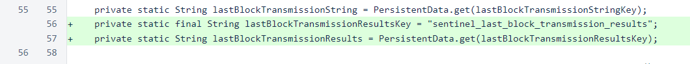
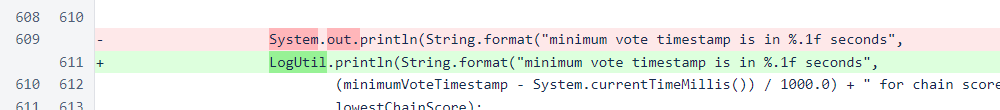
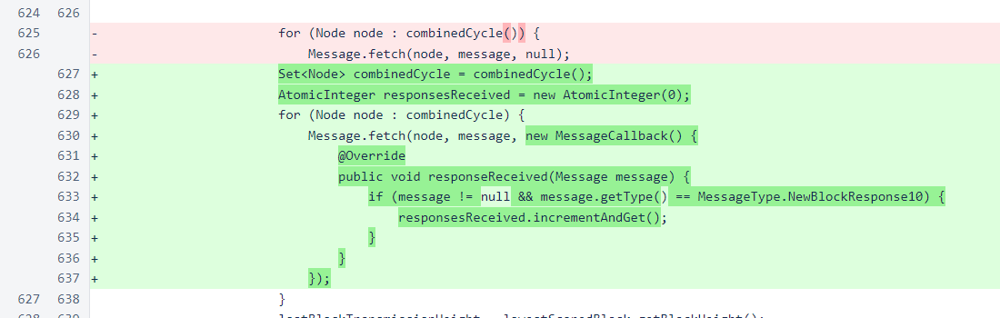
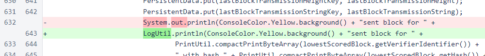
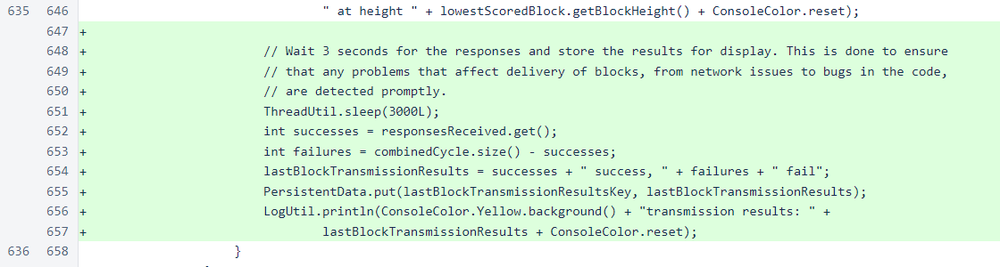
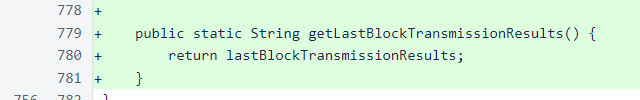
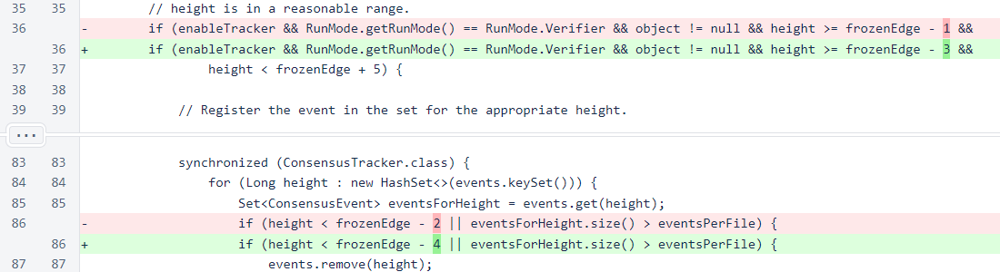
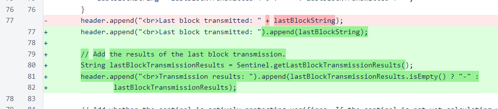
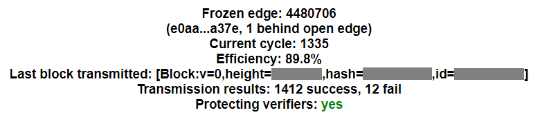

Nyzo version 545 (commit on GitHub) adds a small sentinel monitoring improvement and some minor changes to consensus tracking.
This version affects reporting for the sentinel and the consensus-tracking feature for verifiers. It does not affect any critical functionality.
Following the recent sentinel bug, apprehension regarding use of newer versions of Nyzo would be understandable. However, versions of the code before 542 do not work with version 1 of the blockchain, which will likely go live in the next few days. To promote greater confidence in the newest sentinel version, reporting has been added to show transmission results when blocks are sent to the mesh.
The BlockVote.toString() method now includes the sender identifier. This was added specifically for the consensus-tracking feature.

In Sentinel, a persistent field has been added for the results of the last block transmission.
The print statement showing the minimum-vote timestamp distance is now using LogUtil. This is a part of the ongoing effort to transition appropriate statements to use this class.
In the transmission of the block to the cycle, a callback has been added to process the response. An AtomicInteger is used to count the number of valid responses received. While simple, this feedback is incredibly useful, as it will capture many different potential error conditions.
The statement indicating that a block has been sent has also been changed to use LogUtil.
After 3 seconds, the number of successful block transmissions is stored, and the number of failures is calculated as the difference between the size of the combinedCycle set and the number of successes. These values will also reveal issues that might arise in this cycle set. The transmission-results string is printed using LogUtil and stored for later access.
The lastBlockTransmissionResults field has been exposed for use in the sentinel web interface.
The range of data accepted by the consensus tracker has been extended an additional 2 blocks behind the frozen edge. While such delayed data would certainly not play a role in the consensus process, it might become useful for diagnosing timing issues with verifiers or sentinels.
In writing the consensus file, the toString() methods of Block and BlockVote are now used. This makes the code more concise and also improves the quality of the output.

In SentinelController, the last-block transmission results are now displayed.
The block-transmission results appear as follows in the sentinel web interface.
An active sentinel running the monitoring interface is accessible at quark.nyzo.co. There are a number of reasons not to expose the sentinel web interface publicly like this, and we are only running this sentinel as a demonstration. When activating the web interface on sentinels, a firewall should be used to control access.